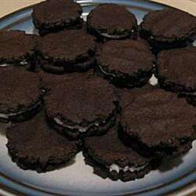

Gloreo cookies

A great dessert
Ingredients:
- 1(18.25 ounce) package devil's food cake mix
- 2 eggs
- 2 tablespoons water
- 2 tablespoons vegetable oil
- ½ cup unsweetened cocoa powder
- 1 cup shortening
- 5 cups confectioners' sugar
- 1 teaspoon vanilla extract
- 1 (.25 ounce) package unflavored gelatin
- ¼ cup cold water
- ½ cup powdered chocolate drink mix
Steps:
Step1:
- Mix together the cake mix, eggs, water, cooking oil and cocoa until you can shape it all into a large ball. Let stand 20 minutes.
Step2:
- Shape into 1/2 inch balls, placed 2 inches apart on greased cookie sheets. Flatten each cookie with bottom of glass greased once but dipped into instant chocolate drink powder.
Step3:
- Bake at 400 degrees F (205 degrees C) for 8 minutes. Remove cookies at once and quickly flatten each with back of spatula. Let cool 20 minutes.
Step4:
- To make filling: Soften 1 envelope unflavored gelatin in 1/4 cup cold water; set in heatproof cup in pan, simmering until clear. Cream together shortening, confectioners' sugar and vanilla. Add cooled gelatin. Beat 10 minutes. Use 1 tablespoon to fill each cookie. Press cookies gently together to spread the filling.